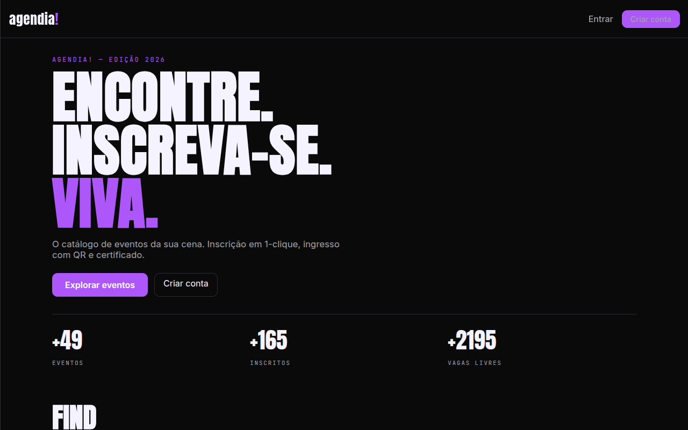

Arquivo / 04 trabalhos
O que já foi construído.
Sem demo inventada: contexto, responsabilidade e decisões de cada trabalho. O Boreas é sistema interno da UFRN, sem acesso público.
01
Projetos e estudos
Três partes: sistemas web, estudos de IA e laboratório de código. Use as setas para navegar.